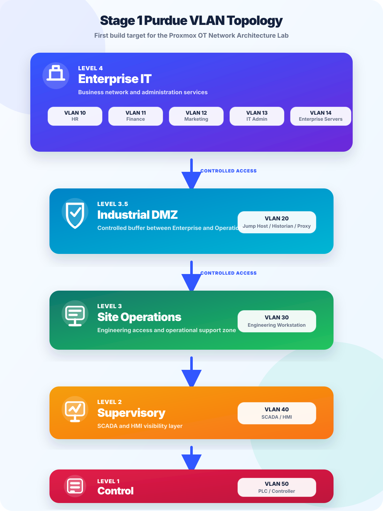

Build target
Stage 1 lab objective
The first stage of the OT Network Architecture Lab is to build a clean Purdue-style topology with separate VLANs for Enterprise IT, Industrial DMZ, Site Operations, Supervisory, and Control.
This gives the project a precise starting point. The lab can begin with segmentation and controlled communication paths, then evolve later with IP addressing, firewall rules, virtual machines, packet captures, monitoring, and screenshots.
Architecture graphic
Graphical topology

Segmentation plan
Proposed VLAN structure
The lab starts with simple, memorable VLAN numbers so the design is easy to understand, document, and expand.
Level 4 — Enterprise IT
VLAN 10 HR, VLAN 11 Finance, VLAN 12 Marketing, VLAN 13 IT Admin, and VLAN 14 Enterprise Servers.
Level 3.5 — Industrial DMZ
VLAN 20 for Jump Host, Historian, Proxy, or other controlled services between Enterprise and Operations.
Level 3 — Site Operations
VLAN 30 for the Engineering Workstation and operational support access.
Level 2 — Supervisory
VLAN 40 for SCADA and HMI systems used for operator visibility and supervision.
Level 1 — Control
VLAN 50 for PLC or controller simulation and future field-control practice.
Security principle
Controlled access between layers
Enterprise IT should not directly reach the Control layer. Access should move through defined boundaries, especially the Industrial DMZ and Site Operations layer. This makes the lab useful for learning segmentation, firewall policy design, troubleshooting, and evidence-based security documentation.
Business-side access is filtered before reaching industrial services.
Jump hosts, proxy services, or historian-style systems provide controlled paths.
Engineering access can be limited and documented for SCADA/HMI support.
PLC/controller communication remains close to the OT process layer.
Virtual lab mapping
How this maps to Proxmox
Proxmox will act as the physical foundation for the lab. The first build can use VLAN-aware bridges and a firewall/router VM to separate the zones. Additional VMs can then be added gradually for enterprise services, jump host access, engineering workstation tools, SCADA/HMI simulation, and controller simulation.
- Proxmox host: base server for virtual machines and lab networking.
- Firewall/router VM: central point for routing and access rules between VLANs.
- Virtual bridges: lab network paths that can later map to physical NICs or managed switch trunks.
- Lab VMs: realistic systems for each layer without needing many physical devices.
Living design
Future development
This page is intended to grow as the lab progresses. Later updates can add IP addressing, firewall rules, VM names, Proxmox bridge screenshots, managed switch configuration, packet captures, monitoring tools, and lessons learned.
Main lab page
Return to the OT Network Architecture Lab overview.
The main lab page explains the Proxmox installation article, portfolio value, and wider project direction.
Back to lab overview